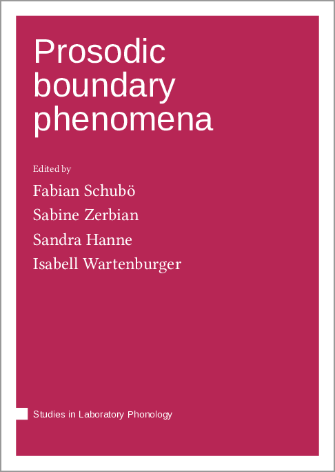
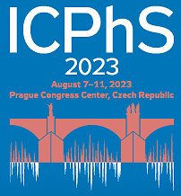

I hold a Ph.D. in Linguistics from Goethe University Frankfurt. Until 2022, I worked as a Research Associate and professor at the University of Stuttgart. In 2023, I completed a course in Data Science at WBS Coding School Berlin and started a position as Research Data Management Coordinator at Karlsruhe Institute of Technology (KIT). See my CV for further details.
My research interests lie in the area of phonetics and phonology, in particular speech prosody: How do speakers encode meaning by means of suprasegmental phonetic features and how do listeners perceive them? I have conducted research on the prosodic patterns in languages as diverse as German, Hungarian, Tswana, and Javanese, mainly focusing on syntax-prosody interface relations, prosodic phrasing, and the prosodic encoding of information structure. Check out my publications for details.
I teach courses related to my research interests. Each winter term, I teach an introductory course in phonetics at the School for Speech Therapy of the Tübingen University Hospital. From 2013 to 2022, I taught graduate and undergraduate courses in General and English Linguistics at the University of Stuttgart. I also supervised BA and MA theses in these areas.
News
-
Edited volume Prosodic boundary phenomena appeared in June 2023 in the series Studies in Laboratory Phonology (Language Science Press):

I edited this volume book in collaboration with Sabine Zerbian (University of Stuttgart), Sandra Hanne, and Isabell Wartenburger (both University of Potsdam). It is grounded in a workshop that we held in 2021 at the annual conference of the German Linguistic Society (DGfS). The five chapters cover selected topics on the production and comprehension of prosodic cues in various populations and languages, presenting cross-linguistic evidence as well as evidence from non-native listeners, infants, adults, and elderly speakers.
-
Co-authored conference paper Correlation of prosodic boundary cues in German is to appear in Proceedings of the 20th International Congress of Phonetic Sciences.
The paper was presented as a poster at the ICPhS in August 2023 in Prague.

I conducted this study in collaboration with Sabine Zerbian (University of Stuttgart). It investigates how durational and F0 cues expressing intonation phrase boundaries are correlated in German. We observed a negative correlation between pause duration and pre-boundary lengthening and a positive correlation between pause duration and F0 range. Altogether, our findings suggest that prosodic boundary cues should be investigated in combination rather than in isolation.